Die Lücke zwischen Modell und HandbuchThe gap between model and manual
Ein Sprachmodell hat drei Lücken, die kein Training schließt. Erstens den Wissensstand: Was nach dem Stichtag der Trainingsdaten geschrieben wurde, kennt es nicht. Zweitens das Firmenwissen: Ein Handbuch, ein Vertrag, ein internes Wiki waren nie im Trainingstext. Drittens die Belegbarkeit: Selbst eine richtige Antwort nennt keine Stelle, an der man sie prüfen könnte. Das Werkzeug zeigt, wie dieselbe Frage mit und ohne Handbuchauszug beantwortet wird; beide Antworten stammen von gemma-4-12b-it in LM Studio am 19.09.2026, die zweite brauchte 398/154 Tokens und 26,4 Sekunden. A language model has three gaps that no training closes. First, the knowledge cutoff: whatever was written after the training data's cutoff date is unknown to it. Second, company knowledge: a manual, a contract, an internal wiki were never in the training text. Third, verifiability: even a correct answer names no place where it could be checked. The tool shows how the same question is answered with and without the manual excerpt; both answers come from gemma-4-12b-it in LM Studio on 19 Sept 2026, the second one needed 398/154 tokens and 26.4 seconds.
Lesen Sie die Auszüge.Read the excerpts. Die RAG-Antwort enthält nur, was in dem einen übergebenen Auszug steht: die Tabellenzeile zu E:18 mit zwei Ursachen, zwei Abhilfen und zwei Seitenverweisen. Was nicht im Auszug steht, steht auch nicht in der Antwort; genau das prüft Übung R02-02.The RAG answer contains only what is in the one excerpt passed: the table row for E:18 with two causes, two remedies and two page references. What is not in the excerpt is not in the answer either; that is exactly what exercise R02-02 checks.
Die Idee: suchen, mitgeben, antwortenThe idea: search, supply, answer
Lewis et al. (2020) haben den Aufbau beschrieben und benannt: Ein Retriever holt zu jeder Frage passende Passagen aus einem Vektorindex, ein Generator erzeugt daraus die Antwort. Die Gewichte des Modells bleiben dabei unverändert; das Wissen liegt in einem Index, den man austauschen und aktualisieren kann. Sie nennen das parametrisches Gedächtnis (die Gewichte) plus nicht-parametrisches Gedächtnis (der Index). Gao et al. (2023) ordnen die Entwicklung seither in drei Stufen: Naive RAG (suchen und mitgeben), Advanced RAG (bessere Chunks, Reranking, Anfrageumformung) und Modular RAG (austauschbare Bausteine). Das Fallbeispiel ist Advanced RAG: Es nutzt Hybrid-Suche, einen Reranker und eine Relevanzschwelle. Lewis et al. (2020) described and named the setup: a retriever fetches matching passages from a vector index for every question, a generator produces the answer from them. The model's weights stay unchanged; the knowledge lives in an index that can be swapped and updated. They call this parametric memory (the weights) plus non-parametric memory (the index). Gao et al. (2023) sort the development since then into three stages: naive RAG (search and supply), advanced RAG (better chunks, reranking, query rewriting) and modular RAG (interchangeable building blocks). The case study is advanced RAG: it uses hybrid search, a reranker and a relevance threshold.


- RetrievalZur Frage passende Textstücke finden: Embedding, Vektorsuche, Schlüsselwörter, Reranking (Labs 05 und 06).Find text pieces matching the question: embedding, vector search, keywords, reranking (labs 05 and 06).
- AugmentationDie Fundstücke in den Prompt legen, als Daten gekennzeichnet, innerhalb eines Budgets (Lab 07).Place the findings into the prompt, marked as data, within a budget (lab 07).
- GenerationDas Sprachmodell antwortet aus Frage und Fundstücken, in einem festen Format mit Quelle (Lab 07).The language model answers from question and findings, in a fixed format with source (lab 07).
Vier Wege, Wissen ins Modell zu bringenFour ways to bring knowledge into the model
RAG ist eine von vier Möglichkeiten. Die Tabelle stellt sie nach den Kriterien gegenüber, die in der Praxis entscheiden: Aktualität, Belegbarkeit, Kosten je Anfrage und Aufwand beim Einrichten. RAG is one of four options. The table compares them by the criteria that decide in practice: freshness, verifiability, cost per request and set-up effort.
| AnsatzApproach | Was passiertWhat happens | AktualitätFreshness | BelegEvidence | Kosten je AnfrageCost per request | Passt, wennFits when |
|---|---|---|---|---|---|
| Prompting | Anweisungen und Beispiele im PromptInstructions and examples in the prompt | kein neues Wissenno new knowledge | kein Belegno evidence | geringlow | Form, Ton, Aufgabe ändern sich, nicht die Faktenform, tone, task change, not the facts |
| Long Context | Das ganze Dokument in den PromptThe whole document into the prompt | aktuellfresh | nur, wenn das Modell zitiertonly if the model cites | hoch: jede Frage zahlt das ganze Dokumenthigh: every question pays for the whole document | ein Dokument, wenige Anfragenone document, few requests |
| Fine-Tuning | Parameter mit eigenen Daten nachtrainierenRetrain parameters with own data | Stand des Trainingsstate at training time | kein Belegno evidence | gering, aber Training teuerlow, but training expensive | Stil, Format, Fachsprache; nicht für Fakten (Ovadia et al. 2023)style, format, jargon; not for facts (Ovadia et al. 2023) |
| RAG | Zur Laufzeit suchen und mitgebenSearch and supply at query time | Stand des Indexstate of the index | Quelle und Seite je Antwortsource and page per answer | mittel: nur die Fundstückemedium: only the findings | viele Dokumente, häufige Änderungen, Nachweispflichtmany documents, frequent changes, duty to cite |
Long Context klingt einfach: Das Handbuch hat 23 925 Tokens und passt in das Fenster von gemma-4-12b. Aber jede Frage kostet dann das ganze Handbuch an Rechenzeit, und Liu et al. (2023) zeigen, dass Modelle relevante Stellen in der Mitte langer Kontexte schlechter finden als am Anfang oder Ende, auch Modelle mit ausdrücklich großem Fenster. RAG gibt dem Modell nur die fünf Stücke, die zur Frage passen, und stellt sie an den Anfang. Long context sounds easy: the manual has 23,925 tokens and fits into gemma-4-12b's window. But every question then costs the whole manual in compute, and Liu et al. (2023) show that models find relevant passages in the middle of long contexts worse than at the beginning or end, even models with an explicitly large window. RAG gives the model only the five pieces that match the question and puts them at the front.
Warum das Fallbeispiel lokal läuftWhy the case study runs locally
Das Fallbeispiel schickt Frage und Handbuchauszüge wahlweise an LM Studio auf dem eigenen Rechner oder an die OpenAI-API. Für die lokale Variante sprechen drei Gründe. Datenschutz: Was das Modell lokal liest, verlässt den Rechner nicht; bei einem Cloud-Anbieter werden Frage und Auszüge übertragen, und der Anbieter wird zum Auftragsverarbeiter im Sinne der DSGVO, mit Vertrag, Prüfpflichten und Fragen zum Drittland. Kontrolle: Modell, Version und Verhalten ändern sich nur, wenn man selbst etwas ändert. Kosten: Die Cloud rechnet je Token ab; die Zahlen sind klein, aber sie wachsen mit jeder Frage, während ein lokales Modell einmal Hardware und danach Strom kostet. Der Rechner unten nutzt die im Live-Protokoll gemessenen Tokenzahlen und die Standardpreise von gpt-4.1-mini vom 19.09.2026. The case study sends question and manual excerpts either to LM Studio on your own machine or to the OpenAI API. Three reasons speak for the local variant. Privacy: what the model reads locally never leaves the machine; with a cloud provider, question and excerpts are transmitted, and the provider becomes a processor under the GDPR, with contract, audit duties and third-country questions. Control: model, version and behaviour change only when you change something yourself. Cost: the cloud bills per token; the numbers are small, but they grow with every question, while a local model costs hardware once and electricity afterwards. The calculator below uses the token counts measured in the live log and the standard prices of gpt-4.1-mini as of 19 Sept 2026.
Lokal ist nicht automatisch besser.Local is not automatically better. Das lokale Modell brauchte für die E:18-Antwort 26,4 Sekunden auf einem MacBook; die Cloud antwortet in wenigen Sekunden und mit größeren Modellen. Das Fallbeispiel hält deshalb beide Wege offen und lässt den Anbieter je Anfrage umschalten.The local model needed 26.4 seconds for the E:18 answer on a MacBook; the cloud answers in a few seconds and with larger models. The case study therefore keeps both paths open and lets the provider be switched per request.
Das Fallbeispiel in fünf SätzenThe case study in five sentences
Der Waschmaschinen-Assistent beantwortet Fragen zur Gebrauchsanleitung einer Siemens-Waschmaschine, 48 Seiten als PDF. Ein Parser macht daraus Markdown mit 187 Abschnitten, die Pipeline zerlegt sie in 346 Chunks und berechnet je Chunk einen Vektor mit dem Modell multilingual-e5-small. Bei einer Frage holt die Suche zwölf Kandidaten, ergänzt exakt passende Fehlercodes, lässt den Reranker bge-reranker-v2-m3 die besten fünf wählen und lehnt ab, wenn kein Kandidat eine Schwelle erreicht. Ein Flask-Server übergibt Frage und Auszüge an LM Studio oder OpenAI und streamt die Antwort in einem festen Format mit Quelle und Seite an den Browser. Alles liegt in einem öffentlichen Repository, das Lab 10 Schritt für Schritt nachbaut.
The washing-machine assistant answers questions about the user manual of a Siemens washing machine, 48 pages as PDF. A parser turns it into Markdown with 187 sections, the pipeline splits them into 346 chunks and computes one vector per chunk with the model multilingual-e5-small. For a question, the search fetches twelve candidates, adds exactly matching error codes, lets the reranker bge-reranker-v2-m3 pick the best five and refuses if no candidate reaches a threshold. A Flask server passes question and excerpts to LM Studio or OpenAI and streams the answer in a fixed format with source and page to the browser. Everything lives in a public repository that lab 10 rebuilds step by step.
Die Labs auf dem WegThe labs along the way
03 macht aus dem PDF Text · 04 zerlegt ihn in Chunks · 05 rechnet Vektoren · 06 sucht und sortiert · 07 fragt das Modell · 08 misst · 09 erklärt den Betrieb · 10 baut alles nach.03 turns the PDF into text · 04 splits it into chunks · 05 computes vectors · 06 searches and ranks · 07 asks the model · 08 measures · 09 explains operations · 10 rebuilds everything.
ÜbungenExercises
Fünf Übungen: zwei Antworten vergleichen, Sätze auf Belege prüfen, Anforderungen einem Ansatz zuordnen, die Definition festhalten und Cloud-Kosten rechnen.Five exercises: compare two answers, check sentences for evidence, assign requirements to an approach, pin down the definition and compute cloud costs.
ZusammenfassungSummary
- Drei Lücken: Wissensstand, Firmenwissen, Belegbarkeit. RAG schließt alle drei, indem es das Dokument zur Laufzeit mitgibt.Three gaps: knowledge cutoff, company knowledge, verifiability. RAG closes all three by supplying the document at query time.
- Retriever holt, Generator antwortet; die Gewichte bleiben unverändert (Lewis et al. 2020).Retriever fetches, generator answers; the weights stay unchanged (Lewis et al. 2020).
- Fine-Tuning ändert, wie das Modell spricht; RAG ändert, was es weiß. Long Context zahlt jede Frage mit dem ganzen Dokument.Fine-tuning changes how the model speaks; RAG changes what it knows. Long context pays for the whole document with every question.
- Lokal heißt: keine Übertragung, volle Kontrolle, Hardware statt Tokenpreis; dafür langsamer und kleiner als die Cloud.Local means: no transmission, full control, hardware instead of token prices; but slower and smaller than the cloud.
- Eine RAG-Antwort ist so gut wie ihre Fundstücke; belegt ist nur, was im Auszug steht.A RAG answer is only as good as its findings; supported is only what is in the excerpt.
QuellenSources
- Lewis, P. et al. (2020): Retrieval-Augmented Generation for Knowledge-Intensive NLP Tasks. NeurIPS. arXiv:2005.11401
- Gao, Y. et al. (2023): Retrieval-Augmented Generation for Large Language Models: A Survey. arXiv:2312.10997
- Ovadia, O. et al. (2023): Fine-Tuning or Retrieval? Comparing Knowledge Injection in LLMs. arXiv:2312.05934
- Liu, N. F. et al. (2023): Lost in the Middle: How Language Models Use Long Contexts. arXiv:2307.03172
- OpenAI: API-Preisliste, Standardpreise gpt-4.1-mini (0,40 / 1,60 USD je 1 Mio. Tokens), developers.openai.com/api/docs/pricing, abgerufen 19.09.2026
- Verordnung (EU) 2016/679 (DSGVO), Art. 28 Auftragsverarbeiter, Art. 44 ff. Drittlandübermittlung.Regulation (EU) 2016/679 (GDPR), Art. 28 processor, Art. 44 ff. third-country transfers.
- Fallbeispiel: swrobuts/SiemensWashingMachineTroubleShooting_LocalLLM, README, docs/TECHNICAL.md und docs/evaluation/LIVE.md (Tokenzahlen der OpenAI-Antworten), Stand 19.09.2026; aufgezeichnete Antworten in
data/antworten.json.Case study: swrobuts/SiemensWashingMachineTroubleShooting_LocalLLM, README, docs/TECHNICAL.md and docs/evaluation/LIVE.md (token counts of the OpenAI answers), as of 19 Sept 2026; recorded answers indata/antworten.json.